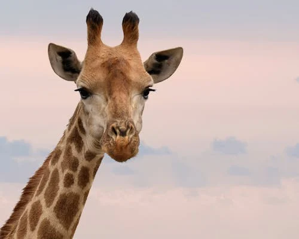
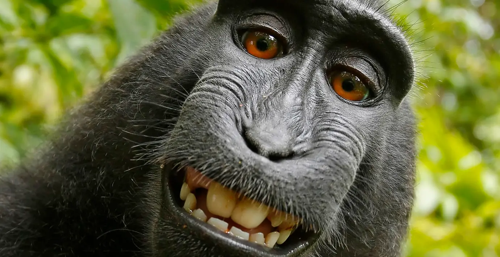
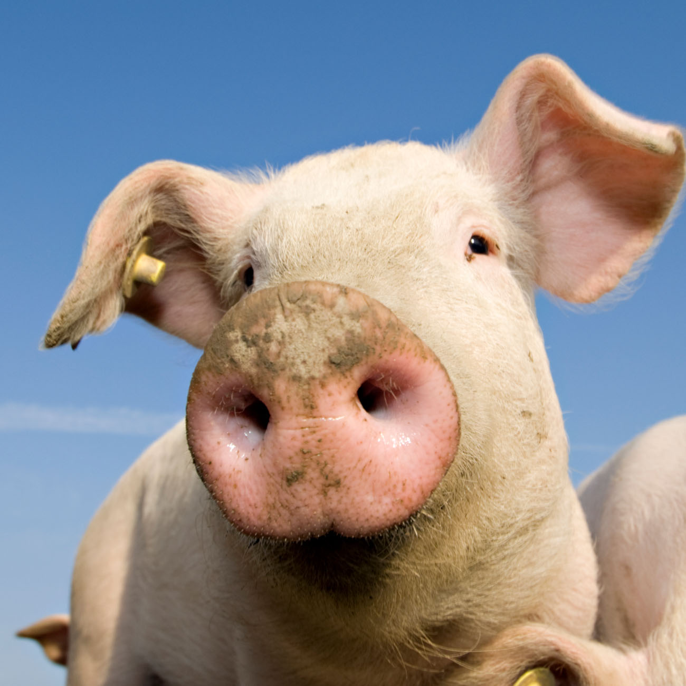
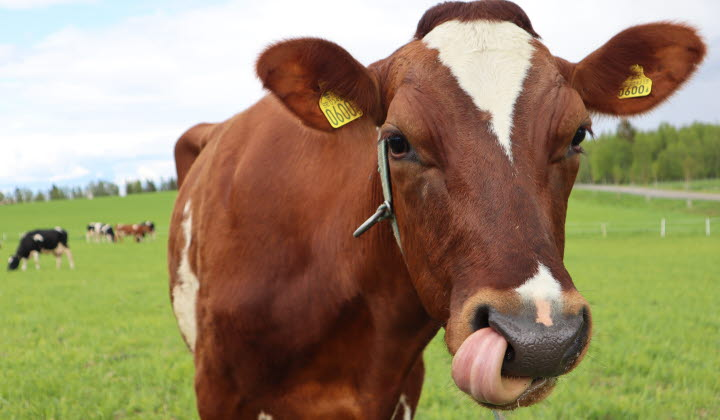
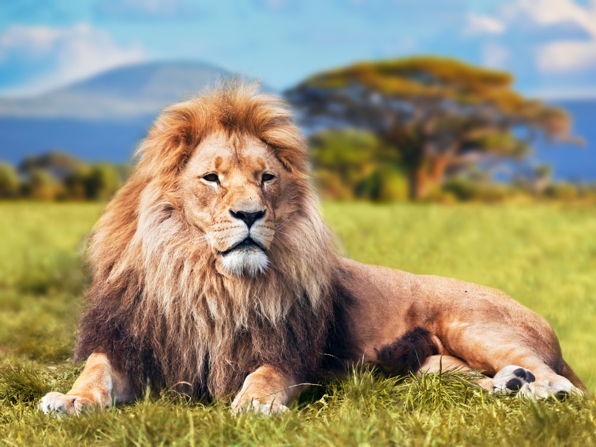
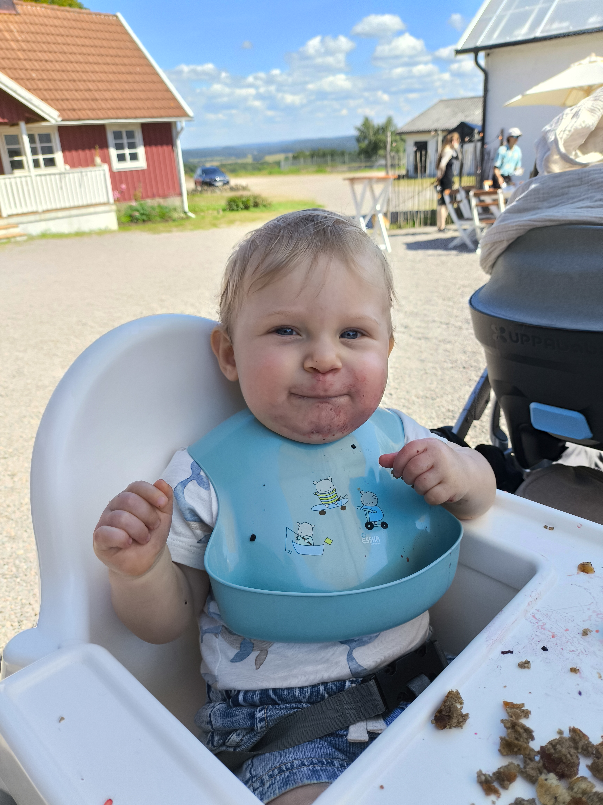

Giraff
Typ: Däggdjur
Färg: Vit och orange
Ålder: Levande giraffer verkar ha uppstått för cirka 1 miljon år sedan i östra Afrika under pleistocen.
Giraff är ett afrikanskt däggdjur som kan bli över fem meter högt och är därmed det högsta nutida landlevande djuret i världen. Giraffen har en lång hals och lång tunga. Den livnär sig på att beta löv från träd och buskar. Giraffen ingår i däggdjursgruppen idisslare, som i sig är del av ordningen partåiga hovdjur.

Elefant
Typ: Däggdjur
Färg: Grå
Ålder: Började gå på jordens yta för cirka 5-10 miljoner år sedan i Afrika.
Det finns idag tre elefantarter. Två av dem lever i Afrika - savannelefanten och skogselefanten. Den tredje arten finns i asien och kallas för asiatisk elefant.

Apa
Typ: Däggdjur
Färg: Svart eller brun
Ålder: Apan härrör från slutet av perioden eocen för cirka 58-34 miljoner år sedan, då däggdjuren på allvar fick fritt spelrum på jorden, efter att dinosauriernas epok var slut.
Apa är ett vanligt namn som kan referera till de flesta däggdjur av infraordningen Simiiformes. De flesta apor är aktiva under dagen och äter nästan uteslutande växter, frukter och insekter.

Gris
Typ: Däggdjur
Färg: Rosa
Ålder: Vildsvinet förvandlades till tamgris i den asiatiska delen cirka 7000 år före Kristi födelse.
Gris är den domesticerade formen av vildsvin, kategoriserad antingen som arten Sus domestica eller underarten Sus scrofa domestica. Grisen är ett allätande, partåigt hovdjur som främst hålls för produktion av griskött.

Ko
Typ: Däggdjur
Färg: Brun och vit eller svart och vit.
Ålder: Till Skandinavien kom boskapen för 4000 år sedan.
Mjölkboskap är nötkreatur eller andra oxdjur som avlas och hålls framför allt för mjölkens skull till skillnad från köttboskap.

Lejon
Typ: Däggdjur
Färg: Brun
Ålder: Forskare tror att afrikanska lejon, som vi känner till dom idag har strövat runt på östra och södra Afrikas savanner och gräsmarker i cirka 124 000 år.
Lejon är ett kattdjur av släktet panthera och världens näst största kattdjur. Lejonen lever i flockar. Två av arterns viktigaste kännetecken är hanarnas man och dess rytande.

Nico Matheo Carlsson
Typ: Däggdjur
Färg: Vit hy med blå ögon och blondt hår
Ålder: 1 år och 9 månader
Nico är av arten homo sapiens. Han är fartfylld, energisk, full av liv och fantastisk. Man bör akta sig för att neka honom från att leka med vatten och gömma kakburkar, glass och saft. Får han nys om att denna föda finns i närheten av honom skriker han kaka, glass och saft på repeat så att öronen blöder på samtliga inom en mils avstånd.

Tiger
Typ: Däggdjur
Färg: Orange, vit och svart
Ålder: Denna art tros ha levat vid början av pleistocen, för två miljoner år sedan.
Tiger är ett kattdjur som endast lever i asien. TIgern är det största nu levande kattdjuret